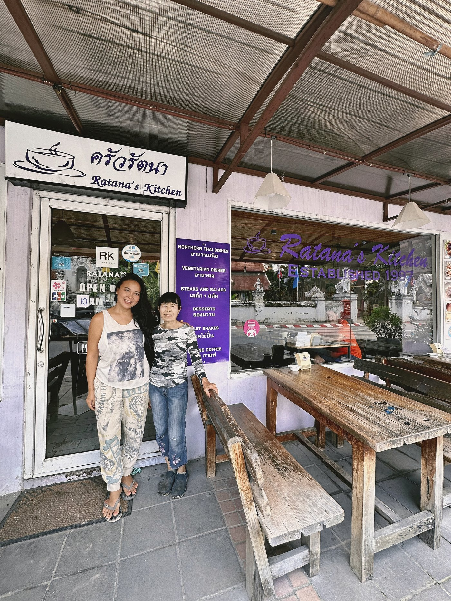

Your Teachers
A mother and daughter,
one unbroken kitchen.
Exactly as Lanna cooking has always been passed on — not from a curriculum, but from one person to the next.

Head Instructor
Ratana Jaikusol
รัตนา ใจกุศล
Born in 1955 on Thapae Road, Chiang Mai, into a Tai Yuan family of the Lanna Kingdom. Ratana learned to cook at her grandmother's side — pounding curry pastes by hand and fermenting soybeans and greens with the herbs of the North. She founded and ran Ratana's Kitchen for 27 years before retiring in 2024 to teach full-time.
27 yrs · Ratana's Kitchen
Lanna & Central Thai
Traditional fermentation

Director & Instructor
Kanjawan "Tai" Jaikusol
กาญจวรรณ ใจกุศล
Tai grew up inside her mother's kitchen and owned her own restaurant by age 18. She holds a HarvardX certificate in food fermentation and is a first-year student of Thai Traditional Medicine — where, as in Lanna tradition, food and medicine are treated as one practice.
HarvardX · Food Fermentation
Thai Traditional Medicine
Wellness & gut health